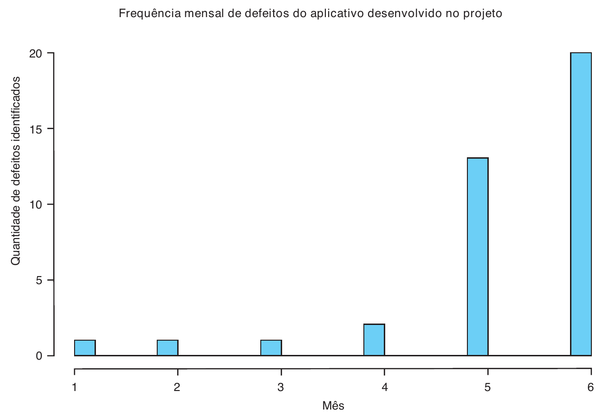

UNINASSAU · Sistemas de Informação
Como saber se
está pronto?
Testes e Qualidade de Software
Scrum e Kanban
Tópicos Especiais em Sistemas de Informação
Prof. Dr. Diogo Francisco Borba
Rodrigues
Ana entra. Bruno também.

Na aula anterior, a regra permitia a consulta ao relato somente pelo orientador responsável.
Ana abre o relato de Lia. O botão não aparece para Bruno, mas ele consegue ler o texto pelo endereço direto.
A equipe pode considerar a proteção concluída?
Qualidade precisa de evidências
Qualidade de software envolve a adequação do produto às necessidades e aos requisitos. Uma demonstração bem-sucedida cobre apenas as condições daquela demonstração.
Na agenda de atendimento
Ana conseguiu ler o texto. Esse resultado evidencia o caminho permitido, mas nada informa sobre a tentativa de Bruno.
A equipe precisa definir também o que o sistema deve impedir, em que condições e como observar a resposta.
Erro, defeito e falha
A equipe interpreta “orientador” como permissão suficiente.
A condição do código ignora o vínculo com o atendimento.
Na execução, Bruno recebe o relato de Lia.
Depurar é investigar e corrigir a causa. Testar ajuda a revelar o comportamento e verificar o resultado da correção.
Verificação e validação
| Pergunta | Aplicação | Possível evidência |
|---|---|---|
| O produto atende ao requisito especificado? | Verificar a regra de autorização. | Bruno recebe uma resposta de acesso negado. |
| A solução atende à necessidade real? | Validar o atendimento durante férias de Ana. | A faculdade consegue designar um substituto sem compartilhar a senha. |
Revisões de requisitos e protótipos podem ocorrer antes do código. Esperar o produto completo concentra a descoberta dos problemas no fim.
Níveis de teste: o que está sob avaliação?
| Nível | Objeto | Exemplo |
|---|---|---|
| Componente / unitário | Uma parte isolada. | Função que decide se há vínculo autorizado. |
| Integração | Comunicação entre partes ou sistemas. | Serviço consulta corretamente o cadastro de responsáveis. |
| Sistema | Produto integrado. | Do login à resposta ao pedido de leitura. |
| Aceitação | Adequação para uso e critérios acordados. | Responsável pela faculdade avalia os cenários de atendimento. |
Um caso de teste reproduzível
| Elemento | Exemplo |
|---|---|
| Pré-condição | Bruno autenticado, sem vínculo com o atendimento AP-052. |
| Entrada e ação | Solicitar diretamente o relato de AP-052. |
| Resultado esperado | Negar a operação e não retornar o conteúdo. |
| Resultado observado | O sistema retorna o texto. |
| Conclusão | Caso reprovado. Registrar versão, passos e evidência. |
O resultado esperado serve como referência para o julgamento. Ele precisa existir antes da comparação.
Caixa-preta e caixa-branca
| Abordagem | Base para escolher os testes | No mesmo controle de acesso |
|---|---|---|
| Caixa-preta | Comportamento especificado, sem depender da estrutura interna. | Testar quem tem e quem não tem autorização. |
| Caixa-branca | Estrutura do código, como instruções e decisões. | Executar os ramos verdadeiro e falso da condição. |
Um teste unitário pode usar qualquer uma das abordagens. Executar todos os ramos não prova que a política implementada é a correta.
Partições e valores de fronteira
Regra fictícia: a agenda aceita antecedência de 1 a 30 dias inteiros, inclusive.
Partição de equivalência: escolher representantes de grupos com comportamento esperado semelhante.
Fronteira: testar 0, 1, 30 e 31 para investigar erros nos limites. São testes selecionados, não todas as entradas possíveis.
Confirmação e regressão
| Depois da correção | Teste | O que ele investiga |
|---|---|---|
| Repetir a consulta indevida de Bruno. | Confirmação | O defeito corrigido ainda se manifesta? |
| Verificar se Ana continua lendo o relato. | Regressão | A mudança prejudicou comportamento que já funcionava? |
Automatizar esses cenários facilita repeti-los. A automação executa verificações definidas pela equipe; não substitui decidir o que vale a pena verificar.
Como uma falha volta para a verificação?
Depois de corrigir, a equipe volta à execução. Uma aprovação vale para aquele cenário, versão e ambiente.
Scrum: aprender a cada Sprint
Scrum organiza o trabalho em ciclos com inspeção e adaptação. O time torna o progresso e os problemas visíveis para decidir o próximo passo com base em evidências.
Na agenda de atendimento
A meta fictícia da Sprint é permitir a consulta segura aos relatos. Descobrir que Bruno ainda consegue acesso muda o plano de trabalho antes de declarar o incremento pronto.
Transparência mostra a falha. Inspeção compara o resultado com o esperado. Adaptação muda o trabalho necessário.
Quem responde por cada decisão?
| Responsabilidade | Foco | Exemplo na agenda |
|---|---|---|
| Product Owner | Valor e ordenação do Product Backlog. | Priorizar consulta segura em relação a um filtro de cores. |
| Developers | Plano e qualidade do incremento. | Implementar autorização, revisar e testar. |
| Scrum Master | Efetividade do time e compreensão de Scrum. | Ajudar a remover impedimentos e melhorar a colaboração. |
Autogerenciamento: o time organiza seu trabalho. O Scrum Master não é o distribuidor obrigatório das tarefas.
Backlogs, incremento e compromissos
| Artefato | Para que serve | Compromisso |
|---|---|---|
| Product Backlog | Trabalho ordenado para melhorar o produto. | Product Goal |
| Sprint Backlog | Meta, itens selecionados e plano da Sprint. | Sprint Goal |
| Incremento | Resultado utilizável que atende à qualidade definida. | Definition of Done |
Uma tela codificada com autorização incompleta continua sendo trabalho pendente para esse objetivo.
O que acontece dentro da Sprint?
Uma Sprint tem duração fixa de até um mês. No exemplo, o time escolheu duas semanas.
Definir a meta e o trabalho.
Construir, testar e ajustar o plano.
Inspecionar resultado com interessados.
Melhorar a forma de trabalhar.
A Review examina o produto. A Retrospective examina como o time trabalhou. O incremento pode ser entregue antes da Review.
Aceitação de um item e Definition of Done
| Referência | Exemplo didático | Alcance |
|---|---|---|
| Critério de aceitação | Bruno não recebe o relato de Lia por acesso direto. | Comportamento específico do item. |
| Definition of Done | Revisão concluída e testes acordados aprovados. | Qualidade necessária ao incremento. |
Terminar o código não basta se a Definition of Done exige testes ainda pendentes. A proximidade do fim da Sprint não reduz essa exigência.
Kanban: acompanhar o fluxo do trabalho
Kanban busca melhorar o fluxo de valor. O time explicita como um item começa, passa pelas etapas e termina, acompanha os itens em andamento e ajusta o processo.
Na agenda de atendimento
Um cartão “autorizar consulta” sai de A fazer, passa por Desenvolvimento e Verificação e só chega a Concluído quando atende à política de saída.
O quadro ajuda a visualizar. Políticas explícitas e controle do trabalho em andamento tornam o fluxo gerenciável.
Há espaço para começar outro item?
A fazer
Desenvolvimento
Limite: 2 · ocupados: 2
Verificação
Limite: 1 · ocupado: 1
Bloqueio: ambiente fora do ar
Concluído
WIP = 3: dois itens em desenvolvimento e um em verificação. O bloqueado continua em andamento.
Puxar novo trabalho depende de capacidade. Agora, investigar o bloqueio pode ajudar mais que iniciar outro cartão.
Tempo de espera e tempo de ciclo
Pedido recebido
Trabalho iniciado
Item concluído
| Medida no exemplo | Intervalo | Resultado |
|---|---|---|
| Lead time adotado nesta aula | Recebimento até conclusão. | 72 horas corridas |
| Cycle time | Início até conclusão. | 48 horas corridas |
O tempo de ciclo inclui espera depois do início. WIP conta itens abertos; throughput conta conclusões por período.
Scrum e Kanban podem trabalhar juntos
| Situação | Scrum ajuda a… | Kanban ajuda a… |
|---|---|---|
| Consulta segura é a meta. | Inspecionar o incremento durante a Sprint. | Ver onde cada item está e reduzir espera. |
| Verificação está congestionada. | Adaptar o plano sem perder a meta. | Controlar entradas e tratar bloqueios. |
Nem todo cartão exige uma Sprint, e nem todo quadro é um sistema Kanban completo. A escolha depende do contexto.
Resolução individual
Três questões, com cinco alternativas cada. Reserve 12 minutos para responder e 6 para a correção.
| Item | Origem | Tema |
|---|---|---|
| 1 | ENADE 2017 · SI · questão 17 | Verificação e validação ao longo do projeto. |
| 2 | Autoral · estilo ENADE | Confirmação e regressão. |
| 3 | Autoral · estilo ENADE | Qualidade e controle de WIP. |
Registre todas as respostas antes de avançar ao gabarito.
Verificação e validação
Uma equipe de projeto desenvolveu um aplicativo mobile para a gestão de frotas de caminhões entre os meses de janeiro e junho de 2017. O projeto seguiu um processo baseado no modelo de ciclo de vida de desenvolvimento em cascata, com atividades realizadas sequencialmente e sem sobreposição.
Ao final do projeto, a equipe precisou tratar uma grande quantidade de defeitos encontrados no aplicativo em um curto espaço de tempo. Como mostra o gráfico a seguir, a maior parte dos defeitos foi identificada ao final do projeto, o que elevou o risco de se entregar o aplicativo com muitos defeitos ao cliente.

Diante desse cenário, a equipe do projeto decidiu que, em novos projetos, realizaria ações que pudessem distribuir o esforço de tratamento de defeitos ao longo dos meses, diminuindo o risco de ainda haver muitos defeitos não tratados no momento próximo à entrega do produto.
Considerando a situação, o gráfico apresentado e o modelo de ciclo de vida de desenvolvimento utilizado no projeto (cascata), assinale a opção que descreve uma ação capaz de produzir o resultado esperado pela equipe.
- Realizar testes assim que o aplicativo estiver pronto para uso.
- Aplicar técnicas de verificação e validação desde o início do projeto.
- Mapear e documentar o processo de desenvolvimento utilizado e comunicá-lo à equipe.
- Elicitar e documentar os requisitos funcionais e não funcionais do produto logo no início do projeto.
- Registrar, evidenciar e comunicar imediatamente os defeitos encontrados aos demais membros da equipe.
Uma correção resolveu o problema?
Uma biblioteca corrigiu um defeito que permitia renovar empréstimos com reserva de outro leitor. A equipe repetiu o cenário que falhava e verificou que a renovação passou a ser negada. Em seguida, verificou se um empréstimo sem reserva ainda podia ser renovado, comportamento que funcionava antes da alteração.
Considerando a finalidade de cada verificação, os testes realizados correspondem, respectivamente, a
- teste de aceitação e depuração, pois o segundo investiga a causa do defeito.
- teste de desempenho e teste de integração, pois o segundo usa dados de outra pessoa.
- teste de regressão e teste de confirmação, pois confirmar consiste em verificar funções que não falhavam.
- teste de confirmação e teste de regressão, pois o segundo investiga efeitos adversos da alteração.
- teste de caixa-branca e teste de carga, pois ambos executam uma versão corrigida.
Qualidade e fluxo na Sprint
Uma equipe usa Scrum e visualiza seu trabalho em um quadro com limite de dois itens em verificação. No último dia da Sprint, os dois lugares estão ocupados. Um terceiro item tem código pronto, mas aguarda verificação. A Definition of Done exige que os testes acordados estejam aprovados. O time considera mover esse terceiro item para “Concluído” para abrir espaço no quadro.
Qual decisão preserva os critérios de qualidade e torna o trabalho pendente transparente?
- Concluir o terceiro item, pois o término do código demonstra que o incremento está utilizável.
- Manter o terceiro item como pendente e colaborar na conclusão dos testes dos itens em verificação, respeitando o limite definido.
- Retirar os dois itens em verificação do quadro, pois apenas atividades de programação compõem o WIP.
- Considerar todos os itens prontos quando a Sprint terminar, transferindo a verificação para depois da entrega.
- Pedir ao Scrum Master que dispense os testes pendentes para manter a data de encerramento da Sprint.
Correção comentada
Examinar requisitos e modelos antes do produto pronto permite descobrir defeitos mais cedo. A estratégia pode incluir revisões e outras técnicas de verificação e validação desde o começo.
A mantém a espera pelo aplicativo pronto. C organiza o processo, mas não assegura avaliação precoce dos produtos. D limita-se à documentação inicial. E melhora a comunicação depois de encontrar o defeito.
Correção comentada
Repetir o cenário que revelou o defeito é confirmação. Investigar se a alteração prejudicou a renovação anteriormente correta é regressão.
A confunde execução com investigação da causa. B e E atribuem técnicas ou objetivos ausentes. C inverte as finalidades.
Correção comentada
O código ainda precisa atender à Definition of Done. A equipe mantém a situação visível e ajuda a terminar os testes, em vez de aumentar artificialmente a quantidade de concluídos.
A e D confundem código ou prazo com qualidade. C oculta o WIP. E atribui ao Scrum Master uma dispensa que contraria a condição da questão.
O que permite dizer “está pronto”?
Define o comportamento necessário.
Compara o observado com o esperado.
Respeita os critérios de qualidade.
O quadro precisa representar o trabalho real. Marcar um cartão como concluído não altera o comportamento do sistema.
Referências e materiais
- Inep · ENADE 2017 · Sistemas de Informação, questão 17
- Inep · gabarito definitivo: questão 17, alternativa B
- ISTQB · CTFL v4.0.1: fundamentos e técnicas de teste
- Schwaber e Sutherland · Scrum Guide, 2020
- Kanban Guide · maio de 2025
Casos didáticos fictícios. Dois itens autorais identificados. Todos os elementos necessários à projeção estão no pacote.